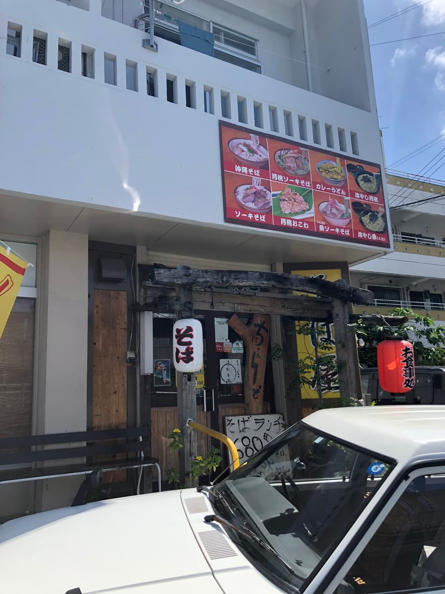
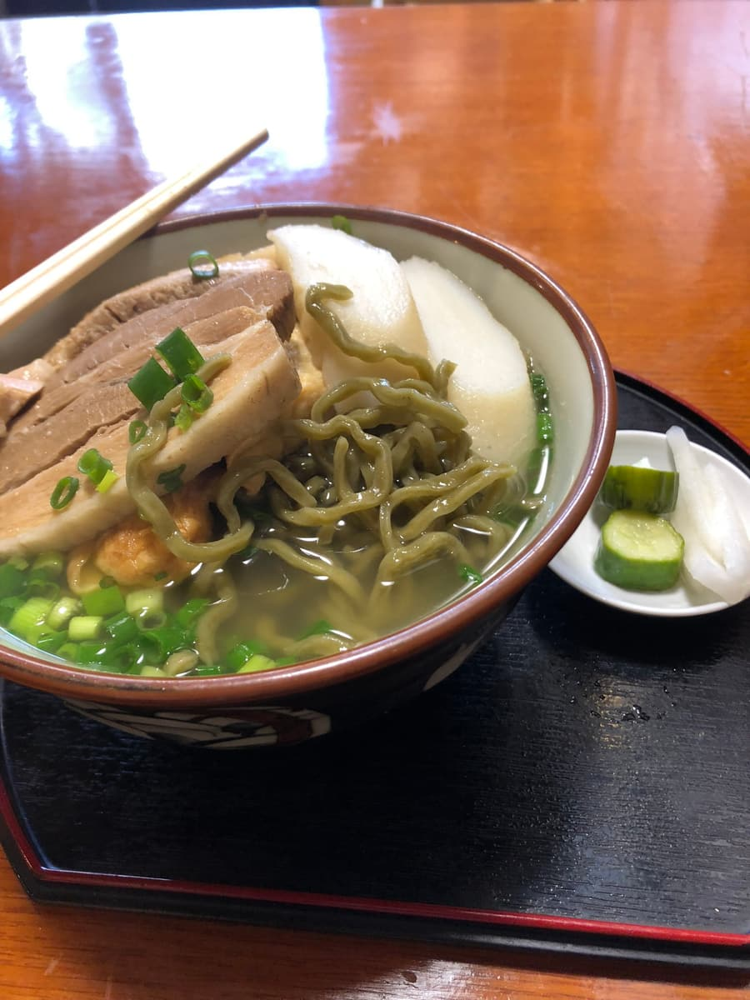

在地方报纸上看到介绍，2022年9月去吃的😄
店名「奇巴多恩多」在冲绳方言中是「正在努力」的意思，很努力呢😊

点了报纸上介绍的「月桃面」。

上网查「月桃」，说是「姜科月桃属的常绿多年生草本植物。在冲绳的地方名称也叫做三念、沙念等。」😊
在冲绳常用来包「鬼饼（年糕）」的叶子，而这里是把月桃粉揉进面里，做成绿色的细卷面。是其他店没有的面呢。
根据店内的说明，月桃好像有各种功效。感觉对身体很好，不错呢😄 吃面的时候，会有淡淡的月桃香气。
汤头是猪骨、柴鱼基底的清爽系，味道温和。配料有三层肉、煎蛋、鱼板、炸豆腐，普通好吃。
评分（9分/15分）：普通好吃。揉入月桃的面是其他店没有的，要不要来吃一次看看呢。店门前的停车位很少，要特别注意。
面：★★★☆☆（3）
汤头：★★★☆☆（3）
配料：★★★☆☆（3）